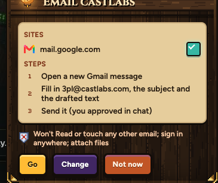

v5. The same eight interactions, now built from Claude's plan card's own pieces: its pixel frame and gold corners, the wood header, the parchment, Samara's real keys. The gem sits in a pixel socket, everything moves in hard steps like a game, a small tab joins each notice to the key it came from, and every download can be dragged straight off its notice.
Samara's real lines (sorted on sheet 98), each with its kind, big or small, and what it drops from.
| Line | Kind | Size | Drops from |
|---|---|---|---|
| Downloaded tax-form.pdf to your Downloads. | Done | Small | Download key |
| Kept in your Bitwarden: github.com. | Done | Small | Shield |
| Home page saved. / This page is your home page now. | Done | Small | Menu |
| Brought in 40 bookmarks. The bar ones are on the shelf in the drawer. | Done | Big | Menu |
| Closed Compare laptops and its 3 tabs. (Undo) | Done | Small, with Undo | Tab list |
| Compare laptops is in the Stash. / Removed 2 duplicates. | Done | Small | Tab list |
| Netflix would not play in this tab, so it opened in the video window. | Done | Big | Menu |
| Bitwarden wants your master password again. (and the five-wrong-PINs line) | Needs you | Big | Shield |
| Sign in to Bitwarden once first, yourself. | Needs you | Big | Shield |
| Safari keeps its bookmarks private. Turn on Aang under Full Disk Access, then press this again. | Needs you | Big | Menu |
| Link Samara to your TV (the TV's code) | Needs you | Big | Menu |
| Samara couldn't open your PIN. Reopen Samara, type your Mac password and pick Always Allow. | Went wrong | Big | Shield |
| tax-form.pdf did not finish downloading. | Went wrong | Big, Try again | Download key |
| Your TV didn't wake up. | Went wrong | Big, Try again | Menu |
| Bitwarden did not answer. / Bitwarden did not keep it. | Went wrong | Big, Try again | Shield |
| No saved login for bestbuy.ca. / No login box found on this page to fill. | Went wrong | Small | Shield |
| Chrome didn't open. Open your bank there yourself. | Went wrong | Big | Shield |
| That is not a web address. | Went wrong | Small | Address bar |
Every ask is a "needs you": blue, the one sound, it stays until you answer. It drops from what it's about.
| Ask | Buttons | Drops from |
|---|---|---|
| A site wants your camera, microphone or both | Allow · No | Shield |
| A site wants to open another app (Zoom, Spotify...) | Open it · No | Shield |
| A risky download (a program from a site you don't know) | Download, trust this site · No | Download key |
| A site wants your keyboard or another device (sheet 69) | Allow · No | Shield |
| Claude wants to do something in its tab (open a checkout, send) | Allow once · No | Menu (Claude's rune) |
| Link Samara to your TV | Link · Not now | Menu |
Keep their own look: Claude's plan card, the fake-site block, the cat page when a site won't load, the secret window's PIN.
His call (2026-10-30): the plan card is great and does not change. It is the one ask that keeps its own look. (This picture is from 1.23.0; its off-centre tick is fixed in 1.23.2.)
